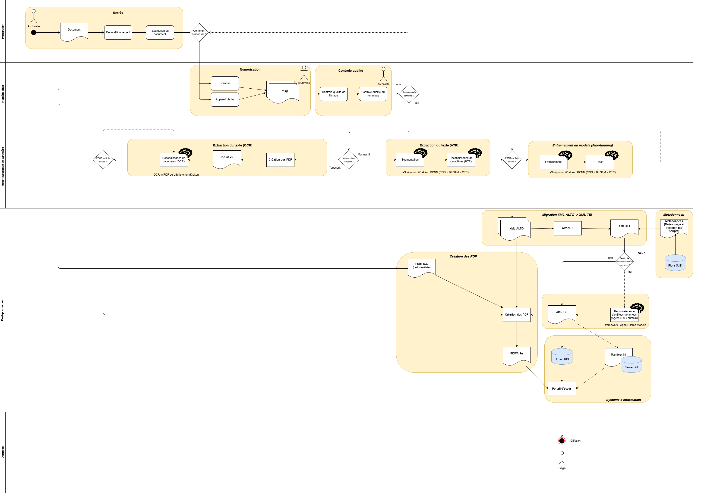

Le projet Frêne est un proof of concept de méthode favorisant la diffusion des archives à l'aide de méthodologie provenant des humanités numériques.
Ce projet fait partie d'un travail plus large de mon mémoire de Master en patrimoine régional et humanités numériques.
Le workflow du projet Frêne repose sur une chaîne de traitement
automatisée combinant des technologies issues de la numérisation
patrimoniale, des humanités numériques et de l'intelligence artificielle.
L'ensemble du processus est orchestré par des scripts Python
exécutés automatiquement grâce à GitHub Actions, assurant
la reproductibilité des traitements.
La reconnaissance de texte est réalisée avec eScriptorium
et le moteur Kraken, utilisés pour la reconnaissance d'écriture manuscrite (HTR).
Les transcriptions sont converties du format XML-ALTO
vers XML-TEI grâce aux scriptes du module Alto2TEI,
puis enrichies automatiquement par une reconnaissance d'entités nommées
exécutée localement avec Ollama et un grand modèle de langage.
Les métadonnées descriptives sont récupérées automatiquement depuis
Flora, tandis que les images maîtres au format
TIFF sont converties en dérivés JPEG,
en documents PDF/A-2u conformes aux exigences de
préservation numérique et en manifestes IIIF permettant
leur diffusion sur le Web. Les résultats sont finalement publiés
automatiquement sur GitHub Pages, offrant un accès
aux différentes ressources produites et illustrant de ce fait la diffusion des archives
avec des méthodes adaptées à l'ère numérique que nous connaissons actuellement.
Workflow de traitement du corpus

Chaîne de traitement automatisée du Projet Frêne.
Méthodologie
Les principales étapes du projet sont les suivantes :
Le processus présenté ci-dessous décrit les principales étapes du traitement
du Journal de Théophile Rémy Frêne, de sa numérisation
jusqu’à sa diffusion numérique. Il s'agit ici, d'un proof of concept et non d'un worklow
entièrement opérationnelle pour un traitement de masse.
Entrée
L’archiviste sélectionne le document à numériser et réalise un premier
dépoussiérage afin de retirer les éléments susceptibles d’endommager le
document ou de gêner sa reproduction. Une évaluation détermine ensuite
si le document peut être numérisé ou s’il nécessite une préparation
complémentaire.
Numérisation
Le document est numérisé à l’aide d’un scanner ou d’un appareil
photographique, selon ses caractéristiques physiques. Les images
maîtres sont produites au format TIFF afin de préserver une image
de haute qualité.
Contrôle qualité
Chaque image est vérifiée afin de contrôler sa netteté, son cadrage,
son exposition, sa complétude et la cohérence du nommage des fichiers.
Les images non conformes sont renvoyées vers une nouvelle numérisation.
Extraction du texte par OCR
Pour les documents imprimés, une reconnaissance optique de caractères
peut être réalisée avec eScriptorium et Kraken. Le texte reconnu peut
ensuite être associé aux images dans un document PDF doté d’une couche
de texte interrogeable. Notre document de démonstration étant manuscrit,
cette partie n'a pas été développé dans le workflow, elle est intégré
dans la modélisation comme perspective logique.
Extraction du texte par HTR
Pour les documents manuscrits, les images sont d’abord segmentées afin
d’identifier les zones et les lignes de texte. La reconnaissance de
l’écriture manuscrite est ensuite effectuée avec eScriptorium et Kraken,
puis exportée sous la forme de fichiers XML-ALTO.
Entraînement du modèle
Lorsque la qualité de la transcription est insuffisante, un modèle HTR
est entraîné à partir de pages transcrites et corrigées manuellement.
Le modèle est ensuite testé avant d’être réutilisé pour améliorer la
reconnaissance du reste du corpus. Il s'agit de la partie la plus chronophage.
Migration du XML-ALTO vers le XML-TEI
Les fichiers XML-ALTO sont convertis automatiquement en XML-TEI à l’aide
du des sciptes liés à Alto2TEI. Cette transformation permet de produire une
transcription structurée.
Intégration des métadonnées
Les métadonnées descriptives sont récupérées depuis Flora au moyen de
scripts Python. Elles sont ensuite réutilisées pour enrichir les fichiers
XML-TEI, les manifestes IIIF et les autres produits dérivés du projet.
Création du PDF/A-2u
Un document PDF/A-2u est généré à partir des images JPEG dérivées, du texte
reconnu et d’un profil colorimétrique ICC. Le fichier obtenu associe les
images du manuscrit à une couche de texte consultable et répond aux
exigences du format PDF/A-2u.
Reconnaissance des entités nommées
Le fichier XML-TEI est enrichi par une étape de reconnaissance automatique
des entités nommées réalisée avec un modèle exécuté localement au moyen
d’Ollama. Les personnes, lieux, organisations, dates et fonctions détectés
sont réintégrés dans le texte sous la forme de balises TEI. Il s'agit ici,
d'un protoype qui n'a pas vocation à etre utilisé en l'état de manière industrielle.
Manifest iiif
Les dérivées documentaires obtenues par ce workflow sont intégrées à un manifeste IIIF produit pour la consultation des
images. Les fichiers TEI, PDF/A-2u, IIIF, JPEG et les métadonnées sont automatiquement intégré au caneva iiif.
Système d’information et diffusion
Par l'intermédiaire d'un portail contenant la notice d'origine et une visionneuse iiif "Tify". Les fichiers TEI, PDF/A-2u, manifest IIIF, JPEG et les métadonnées sont
finalement publiés sur le portail d’accès au manuscrit permettant de démontrer par l'usage de technologies et de la numrisation des documents d'archives,
la création de dérivées et données structurées automatiquement et ensuite mis à disposition du chercheur.
Rendu du projet
Le bouton ci-dessous permet de télécharger les livrables du projet sous la forme d'un dossier compressé. [En cours de création]